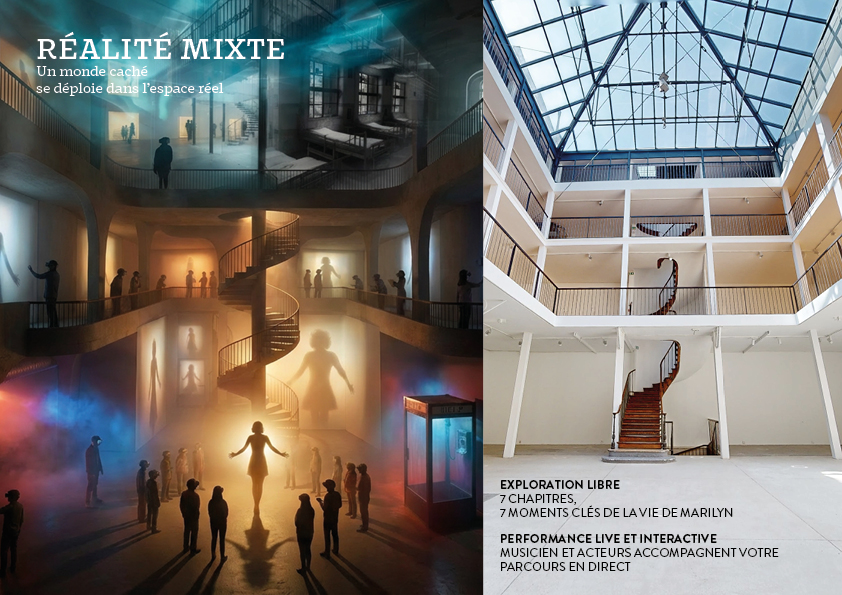

Un monde caché se déploie dans l'espace réel.
Exploration libre : 7 chapitres, 7 moments clés de la vie de Marilyn.
Performance live et interactive : musicien et acteurs accompagnent votre parcours en direct.